| R | terra | sf | tmap | gdistance | ggplot2 | rasterVis |
| 4.6.1 | 1.9.34 | 1.1.1 | 4.4.1 | 1.6.5 | 4.0.3 | 0.51.7 |
6 Raster operations in R
Sample files for this exercise
We’ll first load spatial objects used in this exercise from a remote website: an elevation SpatRaster object, a bathymetry SpatRaster object and a continents sf vector object
library(terra)
library(sf)
z <- gzcon(url("https://github.com/mgimond/spatial_appendix/raw/main/Data/elev_world.RDS"))
elev <- unwrap(readRDS(z))
z <- gzcon(url("https://github.com/mgimond/spatial_appendix/raw/main/Data/bath_world.RDS"))
bath <- unwrap(readRDS(z))
z <- gzcon(url("https://github.com/mgimond/spatial_appendix/raw/main/Data/continent_global.RDS"))
cont <- readRDS(z)Both rasters cover the entire globe. Elevation below mean sea level are encoded as 0 in the elevation raster. Likewise, bathymetry values above mean sea level are encoded as 0.
Note that most of the map algebra operations and functions covered in this tutorial are implemented using the terra package. See chapter 10 for a theoretical discussion of map algebra operations.
Local operations and functions
Unary operations and functions (applied to single rasters)
Most algebraic operations can be applied to rasters as they would with any vector element. For example, to convert all bathymetric values in bath (currently recorded as positive values) to negative values simply multiply the raster by -1.
bath2 <- bath * (-1)Another unary operation that can be applied to a raster is reclassification. In the following example, we will assign all bath2 values that are less than zero a 1 and all zero values will remain unchanged. A simple way to do this is to apply a conditional statement.
bath3 <- bath2 < 0Let’s look at the output. Note that all 0 pixels are coded as FALSE and all 1 pixels are coded as TRUE.
library(tmap)
tm_shape(bath3) + tm_raster(col.scale = tm_scale(values="brewer.greys"),
col.legend = tm_legend(position = tm_pos_out())) 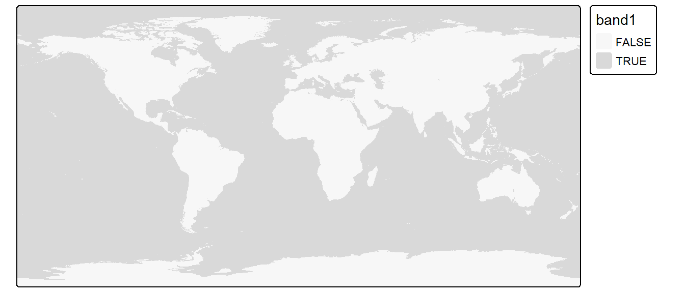
If a more elaborate form of reclassification is desired, you can use the classify function. In the following example, the raster object bath is reclassified to 4 unique values: 100, 500, 1000 and 11000 as follows:
| Original depth values | Reclassified values |
|---|---|
| 0 - 100 | 100 |
| 101 - 500 | 500 |
| 501 - 1000 | 1000 |
| 1001 - 11000 | 11000 |
The first step is to create a plain matrix where the first and second columns list the starting and ending values of the range of input values that are to be reclassified, and where the third column lists the new raster cell values.
m <- c(0, 100, 100, 100, 500, 500, 500,
1000, 1000, 1000, 11000, 11000)
m <- matrix(m, ncol=3, byrow = T)
m [,1] [,2] [,3]
[1,] 0 100 100
[2,] 100 500 500
[3,] 500 1000 1000
[4,] 1000 11000 11000bath3 <- classify(bath, m, right = T)The right=T parameter indicates that the intervals should be closed to the right (i.e. the second column of the reclassification matrix is inclusive).
tm_shape(bath3) + tm_raster(col.scale = tm_scale_categorical(values = "seq"),
col.legend = tm_legend(position = tm_pos_out())) 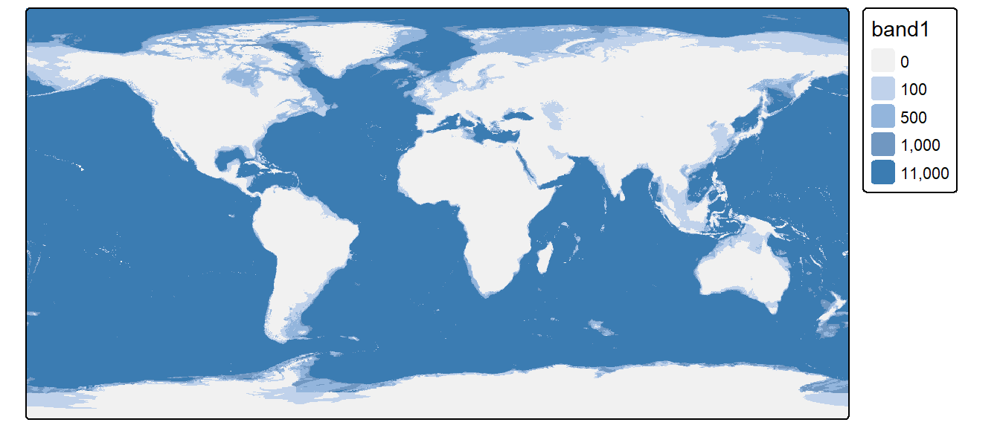
You can also assign NA (missing) values to pixels. For example, to assign NA values to cells that are equal to 100, type
bath3[bath3 == 100] <- NAThe following chunk of code highlights all NA pixels in grey and labels them as missing.
tm_shape(bath3) +
tm_raster(col.scale = tm_scale_categorical(values = "seq", value.na = "grey"),
col.legend = tm_legend(position = tm_pos_out(), na.show = TRUE)) 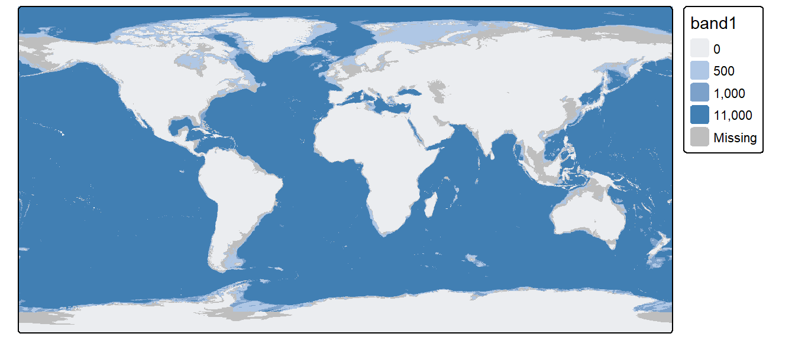
Binary operations and functions (where two rasters are used)
In the following example, elev (elevation raster) is added to bath (bathymetry raster) to create a single elevation raster for the globe. Note that the bathymetric raster will need to be multiplied by -1 to differentiate above mean sea level elevation from below mean sea level depth.
elevation <- elev - bathtm_shape(elevation) +
tm_raster(col.scale = tm_scale_intervals(values = "-brewer.rd_bu", midpoint = 0),
col.legend = tm_legend(position = tm_pos_out(), na.show = TRUE))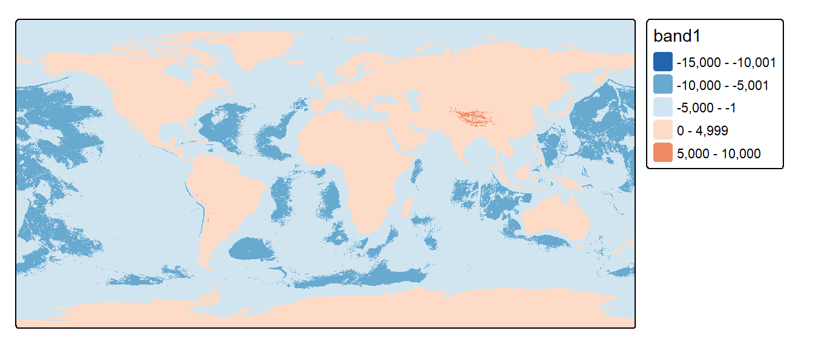
Focal operations and functions
Operations or functions applied focally to rasters involve user defined neighboring cells. Focal operations can be performed using the focal function. For example, to smooth out the elevation raster by computing the mean cell values over a 11 by 11 cells window, type:
f1 <- focal(elevation, w = 11 , fun = mean)The w argument defines the focal window. If it’s given a single number (as is the case in the above code chunk), that number will define the width and height (in cell counts) of the focal window with each cell assigned equal weight.
w can also be passed a matrix with each element in that matrix defining the weight for each cell. The following code chunk will generate the same output as the previous code chunk:
f1 <- focal(elevation, w = matrix(1, nrow = 11, ncol = 11), fun = mean)tm_shape(f1) +
tm_raster(col.scale = tm_scale_intervals(values = "-brewer.rd_bu", midpoint = 0),
col.legend = tm_legend(position = tm_pos_out(), na.show = TRUE))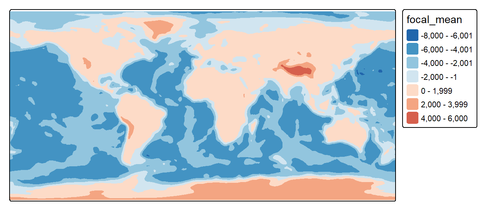
By default edge cells are assigned a value of NA. This is because cells outside of the input raster extent have no value, so when the average value is computed for a cell along the raster’s edge, the kernel will include the NA values outside the raster’s extent. To see an example of this, we will first smooth the raster using a 3 by 3 focal window, then we’ll zoom in on a 3 by 3 portion of the elevation raster in the above left-hand corner of its extent.
# Run a 3x3 smooth on the raster
f_mean <- focal(elevation, w = 3 , fun = mean)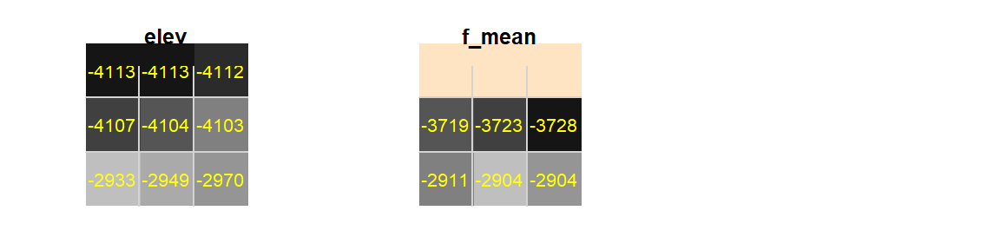
Note the NA values in the upper row (shown in bisque color).
You might have noticed the lack of edge effect issues along the western edge of the raster outputs. This is because the focal function will wrap the eastern edge of the raster to the western edge of that same raster if the input raster layer spans the entire globe (i.e from -180 ° to +180 °).
To have the focal function ignore missing values, simply add the na.rm = TRUE option.
# Run a 3x3 smooth on the raster
f_mean_no_na <- focal(elevation, w = 3 , fun = mean, na.rm = TRUE)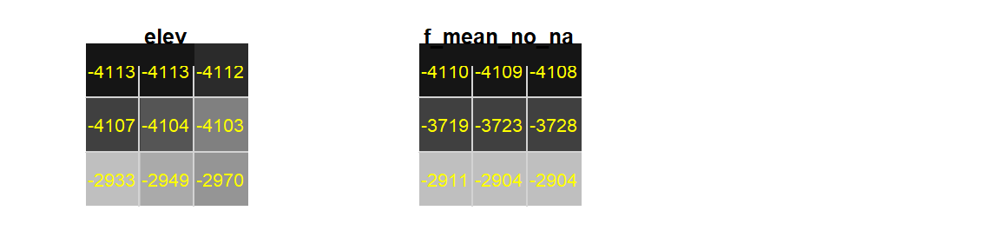
In essence, the above row of values are computed using just 6 values instead of 9 values (the corner values still make use of the across-180° values).
Another option is to expand the row edge beyond its extent by replicating the edge values. This can be done by setting exapnd to true. For example:
# Run a 3x3 smooth on the raster
f_mean_expand <- focal(elevation, w = 3, fun = mean, expand = TRUE)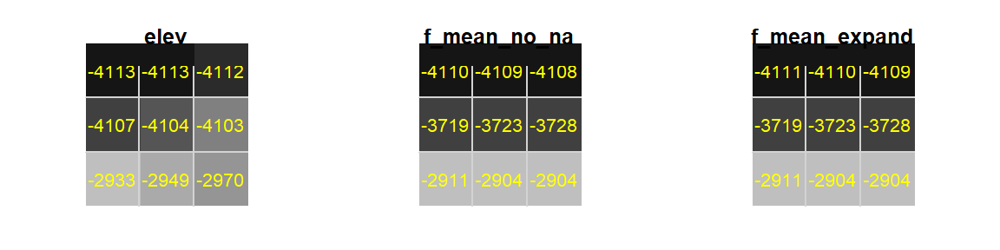
Note that if expand is set to TRUE, the na.rm argument is ignored.
But, you must be careful in making use of the na.rm = TRUE if you are using a matrix to define the weights as opposed to using the fun functions. For example, the mean function can be replicated using the matrix operation as follows:
f_mean <- focal(elevation, w = 3, fun = mean)
f_mat <- focal(elevation, w = matrix(1/9, nrow = 3, ncol = 3))Note that if fun is not defined, it will default to summing the weighted pixel values.
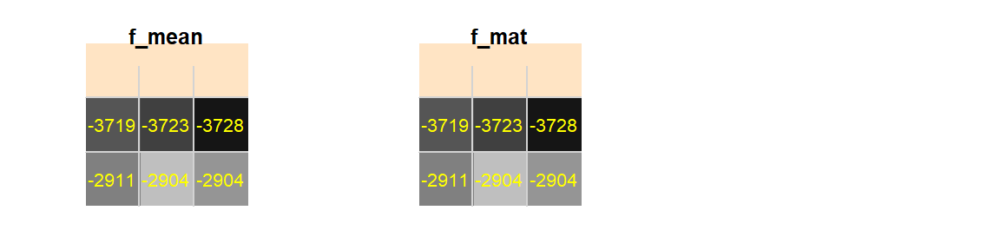
Note the similar output.
Now, if we set na.rm to TRUE to both functions, we get:
f_mean <- focal(elevation, w = 3, fun = mean, na.rm = TRUE)
f_mat <- focal(elevation, w = matrix(1/9, nrow = 3, ncol = 3), na.rm = TRUE)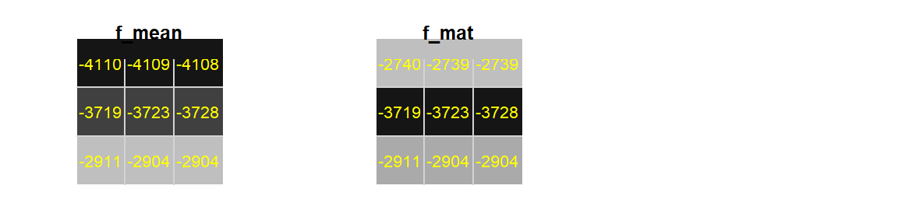
Note the smaller edge values from the matrix defined weights raster. This is because the matrix is assigning 1/9th the weight for each pixel regardless of the number of pixels used to compute the output pixel values. So the upper edge pixels are summing values from just 6 weighted pixels as opposed to eight. For example, the middle top pixel is computed from 1/9(-4113 -4113 -4112 -4107 -4104 -4103), which results in dividing the sum of six values by nine–hence the unbalanced weight effect. Note that we do not have that problem using the mean function.
The neighbors matrix (or kernel) that defines the moving window can be customized. For example if we wanted to compute the average of all 8 neighboring cells excluding the central cell we could define the matrix as follows:
m <- matrix(c(1,1,1,1,0,1,1,1,1)/8,nrow = 3)
f2 <- focal(elevation, w=m, fun=sum)More complicated kernels can be defined. In the following example, a Sobel filter (used for edge detection in image processing) is defined then applied to the raster layer elevation.
Sobel <- matrix(c(-1,0,1,-2,0,2,-1,0,1) / 4, nrow=3)
f3 <- focal(elevation, w=Sobel, fun=sum)
tm_shape(f3) +
tm_raster(col.scale = tm_scale_continuous(values = "brewer.greys", midpoint = 0),
col.legend = tm_legend(show = FALSE))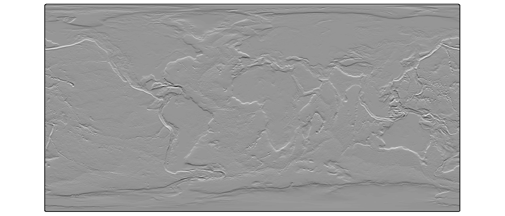
Zonal operations and functions
A common zonal operation is the aggregation of cells. In the following example, raster layer elevation is aggregated to a 5x5 raster layer.
z1 <- aggregate(elevation, fact=2, fun=mean, expand=TRUE)
tm_shape(z1) +
tm_raster(col.scale = tm_scale_intervals(values = "-brewer.rd_bu", midpoint = 0, n = 6),
col.legend = tm_legend(position = tm_pos_out(), na.show = TRUE)) 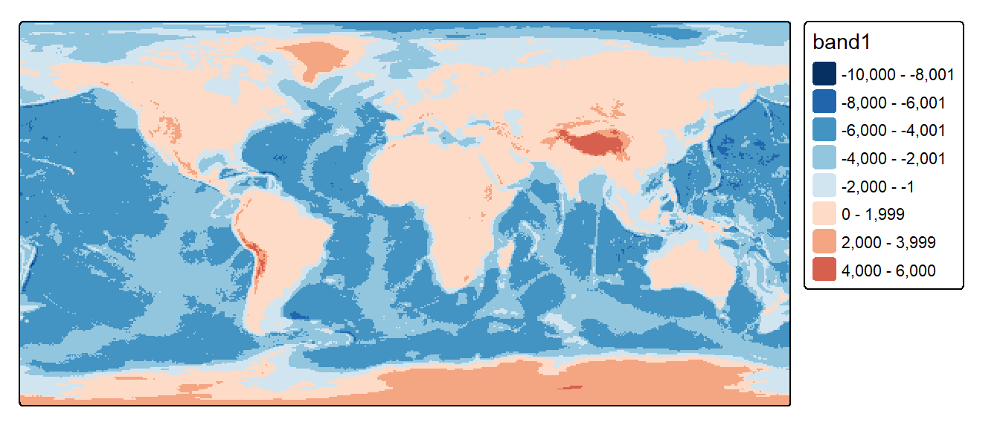
The image may not look much different from the original, but a look at the image properties will show a difference in pixel sizes.
res(elevation)[1] 0.3333333 0.3333333res(z1)[1] 0.6666667 0.6666667z1’s pixel dimensions are half of elevation’s dimensions. You can reverse the process by using the disaggregate function which will split a cell into the desired number of subcells while assigning each one the same parent cell value.
Zonal operations can often involve two layers, one with the values to be aggregated, the other with the defined zones. In the next example, elevation’s cell values are averaged by zones defined by the cont polygon layer.
The following chunk computes the mean elevation value for each unique polygon in cont,
cont.elev <- extract(elevation, cont, fun=mean, bind = TRUE) The output is a SpatVector. If you want to output a dataframe, set bind to FALSE. cont.elev can be converted back to an sf object as follows:
cont.elev.sf <- st_as_sf(cont.elev)The column of interest is automatically named band1. We can now map the average elevation by continent.
tm_shape(cont.elev.sf) +
tm_polygons(fill="band1",
fill.scale = tm_scale_intervals(values = "brewer.reds", midpoint = NA),
fill.legend = tm_legend(position = tm_pos_out()))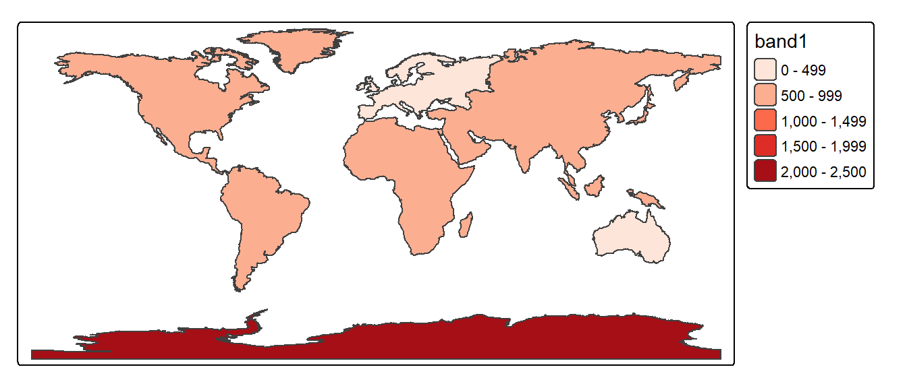
Many custom functions can be applied to extract. For example, to extract the maximum elevation value by continent, type:
cont.elev <- extract(elevation, cont, fun=max, bind = TRUE) As another example, we may wish to extract the number of pixels in each polygon using a customized function.
cont.elev <- extract(elevation, cont, fun=function(x,...){length(x)}, bind = TRUE) Global operations and functions
Global operations and functions may make use of all input cells of a grid in the computation of an output cell value.
An example of a global function is the Euclidean distance function, distance, which computes the shortest distance between a pixel and a source (or destination) location. To demonstrate the distance function, we’ll first create a new raster layer with two non-NA pixels.
r1 <- rast(ncols=100, nrows=100, xmin=0, xmax=100, ymin=0, ymax=100)
r1[] <- NA # Assign NoData values to all pixels
r1[c(850, 5650)] <- 1 # Change the pixels #850 and #5650 to 1
crs(r1) <- "+proj=ortho" # Assign an arbitrary coordinate system (needed for mapping with tmap)tm_shape(r1) +
tm_raster(col.scale = tm_scale_discrete(values = "reds"),
col.legend = tm_legend(show = FALSE)) 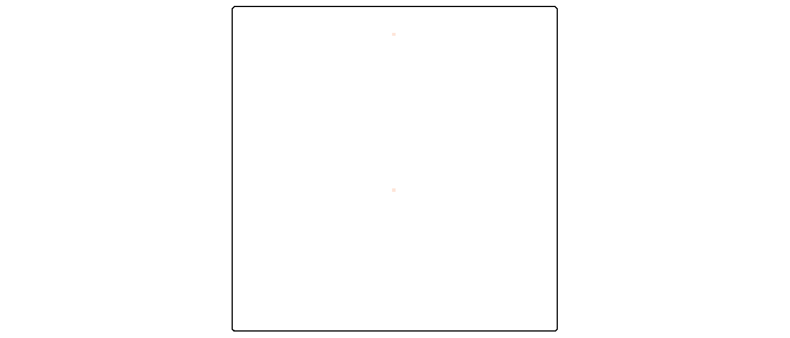
Next, we’ll compute a Euclidean distance raster from these two cells. The output extent will default to the input raster extent.
r1.d <- distance(r1) tm_shape(r1.d) +
tm_raster(col.scale = tm_scale_continuous(values = "brewer.greens"),
col.legend = tm_legend(position = tm_pos_out(), title = "Distance")) +
tm_shape(r1) +
tm_raster(col.scale = tm_scale_discrete(values = "reds"),
col.legend = tm_legend(show = FALSE)) 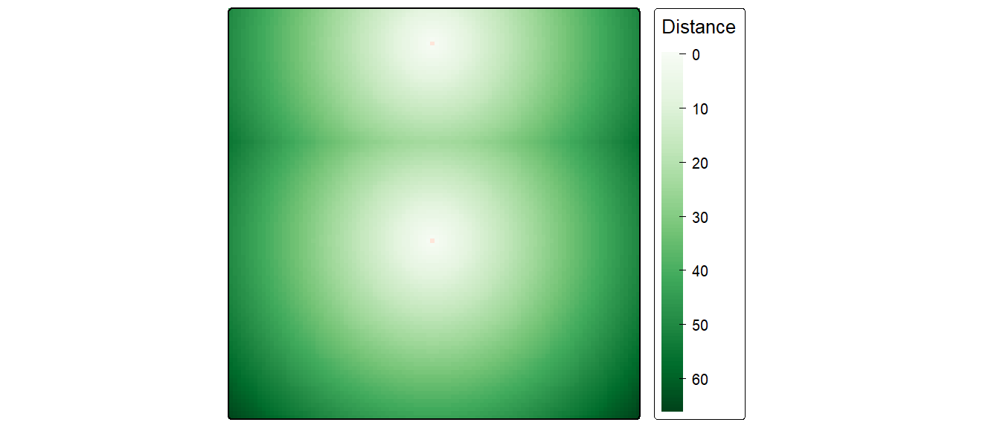
You can also compute a distance raster using sf point objects. In the following example, distances to points (25,30) and (87,80) are computed for each output cell. However, since we are working off of point objects (and not an existing raster as was the case in the previous example), we will need to create a blank raster layer which will define the extent of the Euclidean distance raster output.
r2 <- rast(ncols=100, nrows=100, xmin=0, xmax=100, ymin=0, ymax=100)
crs(r2) <- "+proj=ortho" # Assign an arbitrary coordinate system
# Create a point layer
p1 <- st_as_sf(st_as_sfc("MULTIPOINT(25 30, 87 80)", crs = "+proj=ortho"))Now let’s compute the Euclidean distance to these points using the distance function.
r2.d <- distance(r2, p1)Let’s plot the resulting output.
tm_shape(r2.d) +
tm_raster(col.scale = tm_scale_continuous(values = "brewer.greens"),
col.legend = tm_legend(position = tm_pos_out(), title = "Distance")) +
tm_shape(p1) + tm_dots(fill = "red") 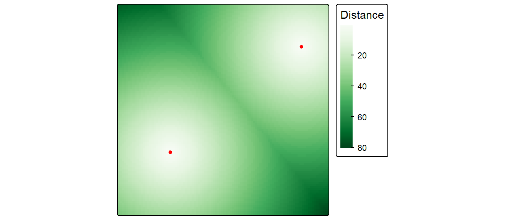
Computing cumulative distances
This exercise demonstrates how to use functions from the gdistance package to generate a cumulative distance raster. One objective will be to demonstrate the influence “adjacency cells” wields in the final results.
Load the gdistance package.
library(gdistance)First, we’ll create a 100x100 raster and assign a value of 1 to each cell. The pixel value defines the cost (other than distance) in traversing that pixel. In this example, we’ll assume that the cost is uniform across the entire extent.
r <- rast(nrows=100,ncols=100,xmin=0,ymin=0,xmax=100,ymax=100)
r[] <- rep(1, ncell(r))If you were to include traveling costs other than distance (such as elevation) you would assign those values to each cell instead of the constant value of 1.
A translation matrix allows one to define a ‘traversing’ cost going from one cell to an adjacent cell. Since we are assuming there are no ‘costs’ (other than distance) in traversing from one cell to any adjacent cell we’ll assign a value of 1, function(x){1}, to the translation between a cell and its adjacent cells (i.e. translation cost is uniform in all directions).
There are four different ways in which ‘adjacency’ can be defined using the transition function. These are showcased in the next four blocks of code.
In this example, adjacency is defined as a four node (vertical and horizontal) connection (i.e. a “rook” move).
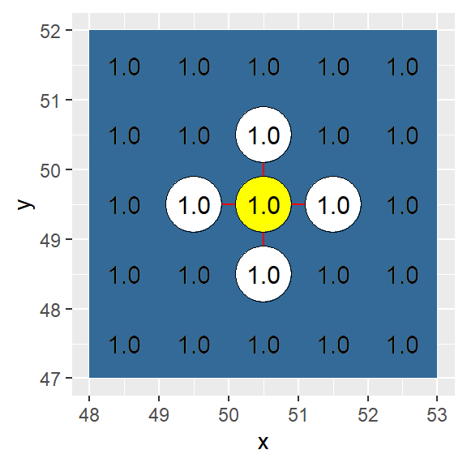
h4 <- transition(raster(r), transitionFunction = function(x){1}, directions = 4)In this example, adjacency is defined as an eight node connection (i.e. a single cell “queen” move).
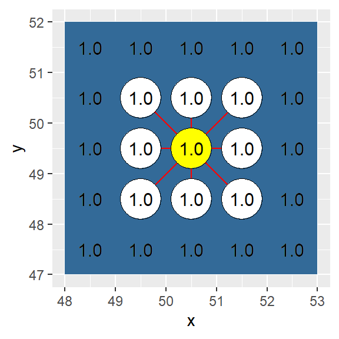
h8 <- transition(raster(r), transitionFunction = function(x){1}, directions = 8)In this example, adjacency is defined as a sixteen node connection (i.e. a single cell “queen” move combined with a “knight” move).
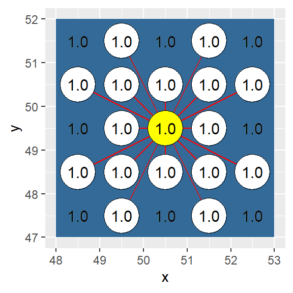
h16 <- transition(raster(r), transitionFunction=function(x){1},16,symm=FALSE)In this example, adjacency is defined as a four node diagonal connection (i.e. a single cell “bishop” move).
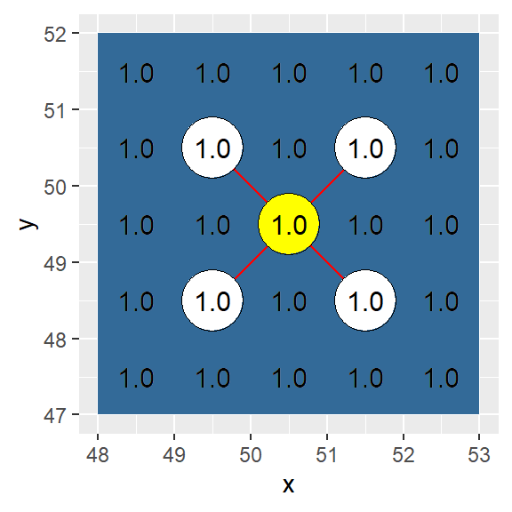
hb <- transition(raster(r), transitionFunction=function(x){1},"bishop",symm=FALSE)The transition function treats all adjacent cells as being at an equal distance from the source cell across the entire raster. geoCorrection corrects for ‘true’ local distance. In essence, it’s adding an additional cost to traversing from one cell to an adjacent cell (the original cost being defined using the transition function). The importance of applying this correction will be shown later.
Note: geoCorrection also corrects for distance distortions associated with data in a geographic coordinate system. To take advantage of this correction, make sure to define the raster layer’s coordinate system using the projection function.
h4 <- geoCorrection(h4, scl=FALSE)
h8 <- geoCorrection(h8, scl=FALSE)
h16 <- geoCorrection(h16, scl=FALSE)
hb <- geoCorrection(hb, scl=FALSE)In the “queen’s” case, the diagonal neighbors are \(\sqrt{2 x (CellWidth)^{2}}\) times the cell width distance from the source cell.
Next we will map the cumulative distance (accCost) from a central point (A) to all cells in the raster using the four different adjacency definitions.
A <- c(50,50) # Location of source cell
h4.acc <- accCost(h4,A)
h8.acc <- accCost(h8,A)
h16.acc <- accCost(h16,A)
hb.acc <- accCost(hb,A) If the geoCorrection function had not been applied in the previous steps, the cumulative distance between point location A and its neighboring adjacent cells would have been different. Note the difference in cumulative distance for the 16-direction case as shown in the next two figures.
Uncorrected (i.e. geoCorrection not applied to h16):
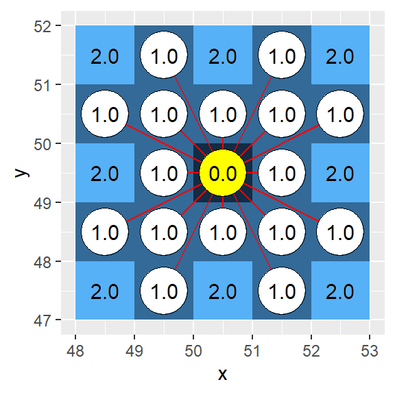
Corrected (i.e. geoCorrection applied to h16):
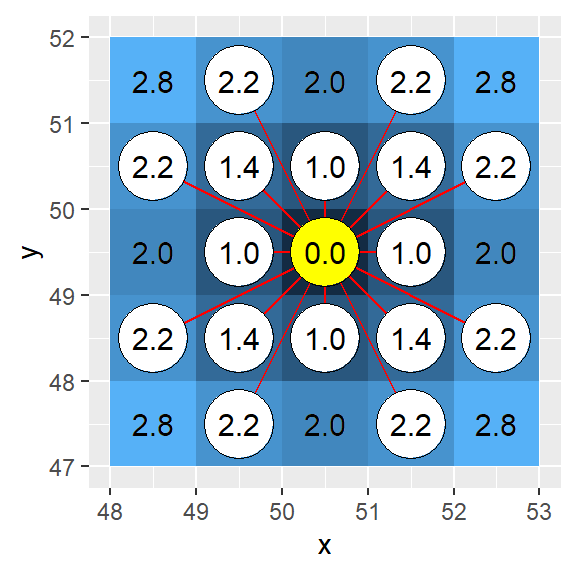
The “bishop” case offers a unique problem: only cells in the diagonal direction are identified as being adjacent. This leaves many undefined cells (labeled as Inf). We will change the Inf cells to NA cells.
hb.acc[hb.acc == Inf] <- NANow let’s compare a 7x7 subset (centered on point A) between the four different cumulative distance rasters.
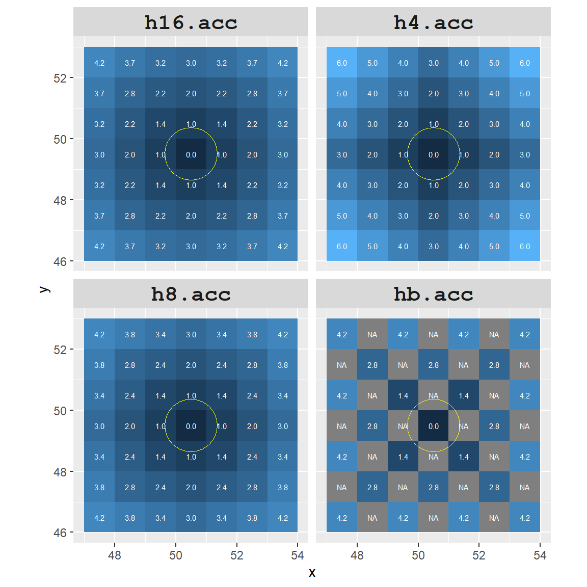
To highlight the differences between all four rasters, we will assign a red color to all cells that are within 20 cell units of point A.
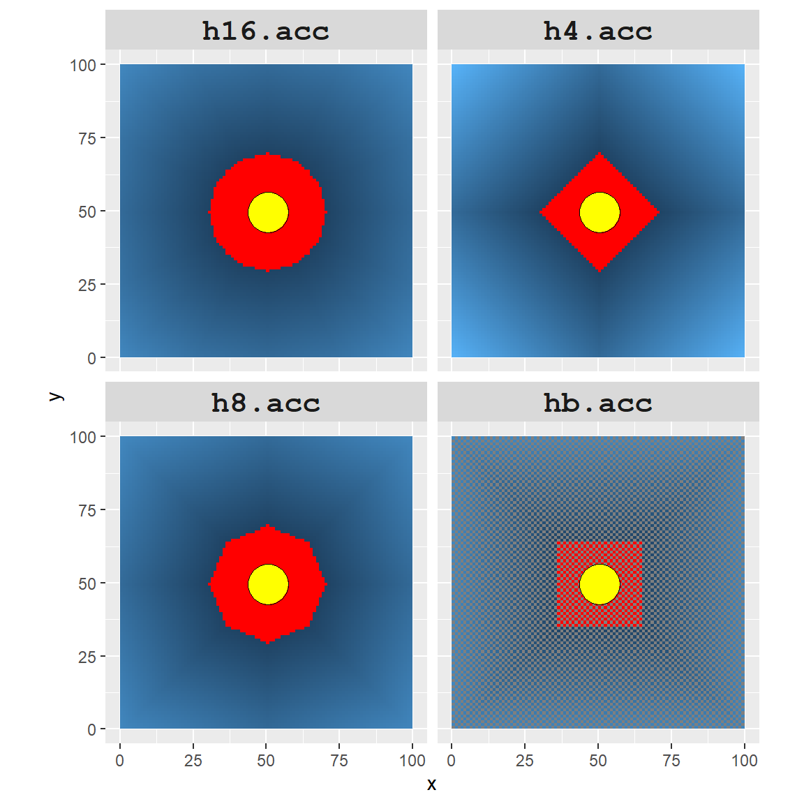
It’s obvious that the accuracy of the cumulative distance raster can be greatly influenced by how we define adjacent nodes. The number of red cells (i.e. area identified as being within a 20 units cumulative distance) ranges from 925 to 2749 cells.
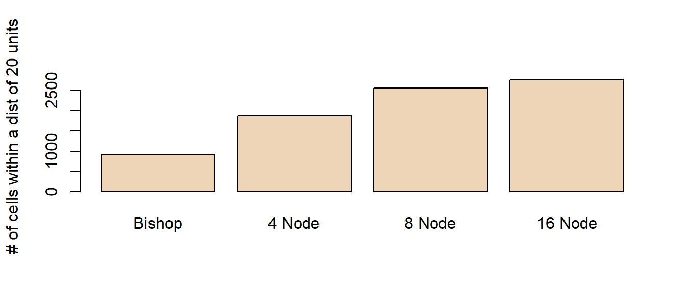
Working example
In the following example, we will generate a raster layer with barriers (defined as NA cell values). The goal will be to identify all cells that fall within a 290 km traveling distance from the upper left-hand corner of the raster layer (the green point in the maps). Results between an 8-node and 16-node adjacency definition will be compared.
# create an empty raster
r <- rast(nrows=300,ncols=150,xmin=0,ymin=0,xmax=150000, ymax=300000)
# Define a UTM projection (this sets map units to meters)
crs(r) = "+proj=utm +zone=19 +datum=NAD83"
# Each cell is assigned a value of 1
r[] <- rep(1, ncell(r))
# Generate 'baffles' by assigning NA to cells. Cells are identified by
# their index and not their coordinates.
# Baffles need to be 2 cells thick to prevent the 16-node
# case from "jumping" a one pixel thick NA cell.
a <- c(seq(3001,3100,1),seq(3151,3250,1))
a <- c(a, a+6000, a+12000, a+18000, a+24000, a+30000, a+36000)
a <- c(a , a+3050)
r[a] <- NA
# Let's check that the baffles are properly placed
tm_shape(r) + tm_raster(colorNA="red") +
tm_legend(legend.show=FALSE)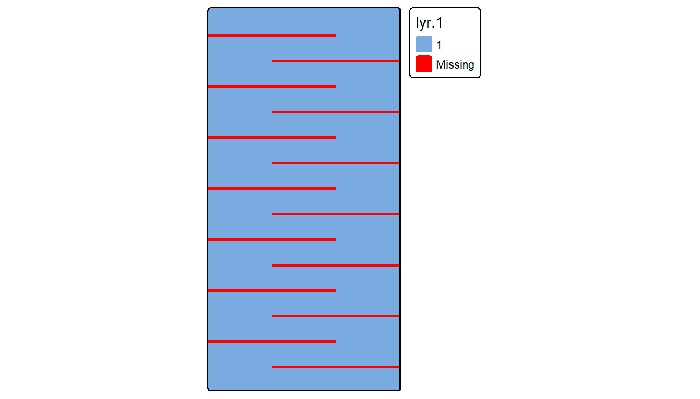
# Next, generate a transition matrix for the 8-node case and the 16-node case
h8 <- transition(raster(r), transitionFunction = function(x){1}, directions = 8)
h16 <- transition(raster(r), transitionFunction = function(x){1}, directions = 16)
# Now assign distance cost to the matrices.
h8 <- geoCorrection(h8)
h16 <- geoCorrection(h16)
# Define a point source and assign a projection
A <- SpatialPoints(cbind(50,290000))
#crs(A) <- "+proj=utm +zone=19 +datum=NAD83 +units=m +no_defs"
# Compute the cumulative cost raster
h8.acc <- accCost(h8, A)
h16.acc <- accCost(h16,A)
# Replace Inf with NA
h8.acc[h8.acc == Inf] <- NA
h16.acc[h16.acc == Inf] <- NALet’s plot the results. Yellow cells will identify cumulative distances within 290 km.
tm_shape(h8.acc) +
tm_raster(col.scale = tm_scale(values = "brewer.yl_or_rd", breaks=c(0,290000,Inf)),
col.legend = tm_legend(position = tm_pos_out(), title = "Distance")) +
tm_shape(st_as_sf(A)) + tm_dots(fill = "red", size = 0.8)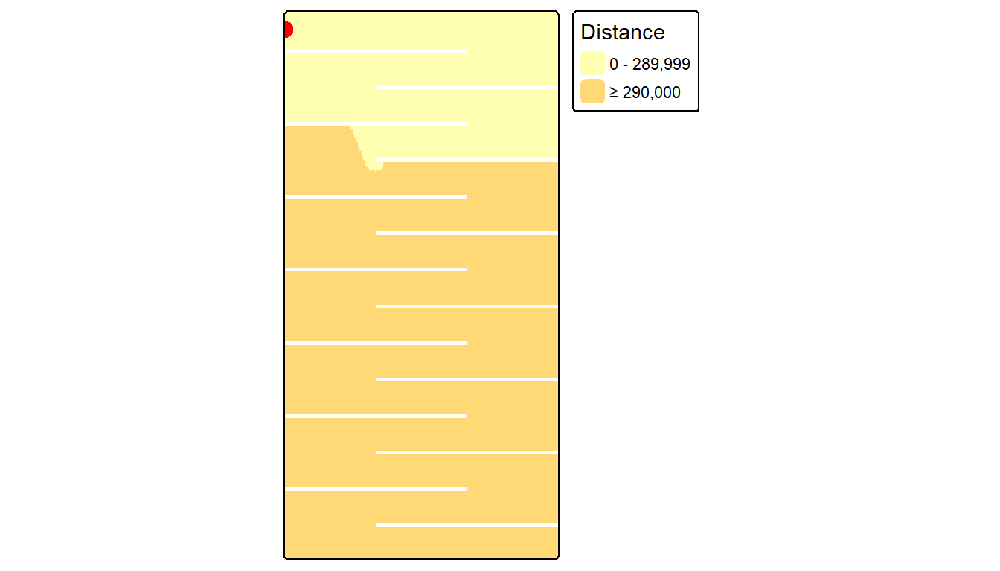
tm_shape(h16.acc) +
tm_raster(col.scale = tm_scale(values = "brewer.yl_or_rd", breaks=c(0,290000,Inf)),
col.legend = tm_legend(position = tm_pos_out(), title = "Distance")) +
tm_shape(st_as_sf(A)) + tm_dots(fill = "red", size = 0.8)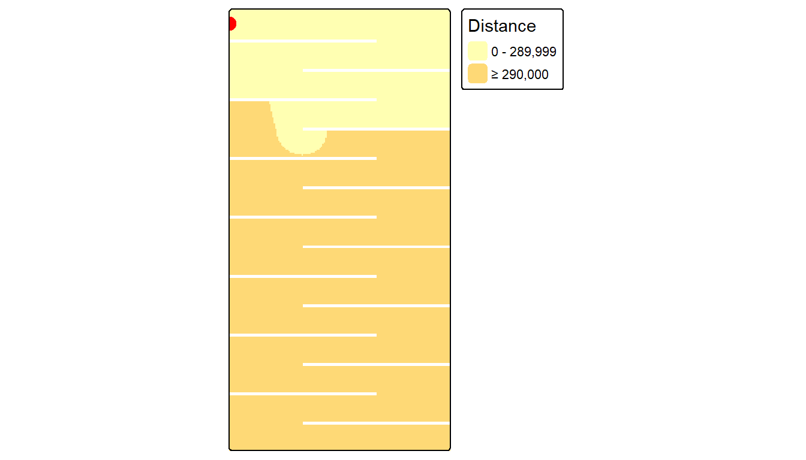
We can compute the difference between the 8-node and 16-node cumulative distance rasters:
table(h8.acc[] <= 290000)
FALSE TRUE
31458 10742 table(h16.acc[] <= 290000)
FALSE TRUE
30842 11358 The number of cells identified as being within a 290 km cumulative distance of point A for the 8-node case is 10742 whereas it’s 11358 for the 16-node case, a difference of 5.4%.